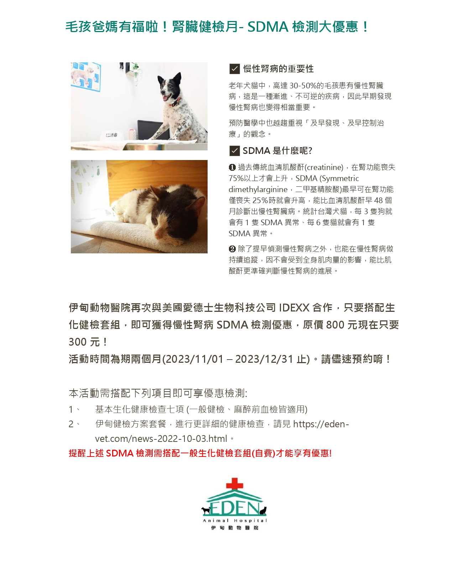
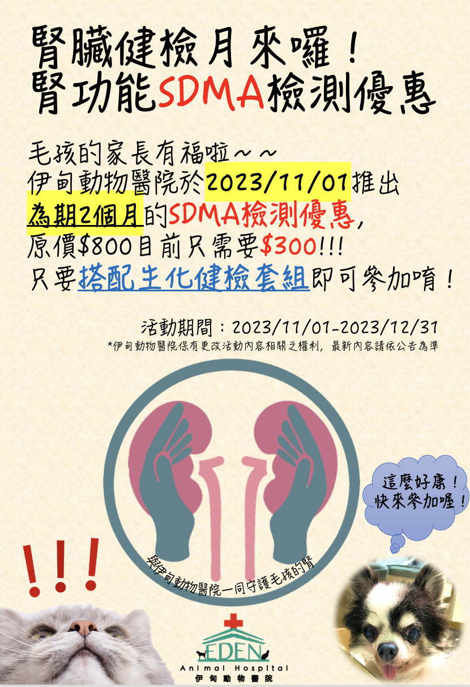

2023-11-01
毛孩爸媽有福啦！腎臟健檢月- SDMA檢測大優惠！
慢性腎病的重要性
老年犬貓中，高達30-50%的毛孩患有慢性腎臟病，這是一種漸進、不可逆的疾病，因此早期發現慢性腎病也變得相當重要。
預防醫學中也越趨重視「及早發現、及早控制治療」的觀念。
SDMA是什麼呢?
1.過去傳統血清肌酸酐(creatinine)，在腎功能喪失75%以上才會上升，SDMA (Symmetric dimethylarginine，二甲基精胺酸)最早可在腎功能僅喪失25％時就會升高‼️‼️，能比血清肌酸酐早48個月診斷出慢性腎臟病。統計台灣犬貓，每3隻狗就會有1隻SDMA異常、每6隻貓就會有1隻SDMA異常。
2.除了提早偵測慢性腎病之外，也能在慢性腎病做持續追蹤，因不會受到全身肌肉量的影響，能比肌酸酐更準確判斷慢性腎病的進展。
●活動怎麼進行？
睽違多年，現在就告訴你一個天大好消息，伊甸動物醫院再次與美國愛德士生物科技公司IDEXX合作，只要搭配生化健檢套組，即可獲得慢性腎病SDMA檢測優惠，原價800元現在只要300元！活動時間為期兩個月(2023/11/01 – 2023/12/31止)。想要參與活動的家長們，請儘速預約唷！
●適用對象 (以下二選一‼️‼️)
(1)基本生化健康檢查七項 (一般健檢、麻醉前血檢皆適用)
基本生化健康檢查含白蛋白(Alb)、總蛋白(TP), 尿素氮(BUN), 肌酸酐(Crea), 胺基轉氨酶(ALT)、鹼性磷酸酶(ALKP)、血糖(Glu)
欲參與伊甸健檢方案套餐，進行更詳細的健康檢查，請見https://eden-vet.com/news-2023-10-31.html
欲知詳情，請洽 #伊甸動物醫院！TEL (02) 8509-2579
伊甸另有一般健檢方案，請見https://eden-vet.com/news-2023-10-31.html
提醒**SDMA檢測優惠，需搭配一般生化健檢套組(自費)才能享有唷！！

